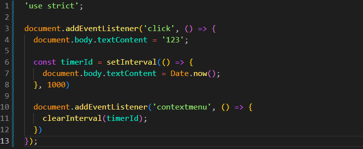
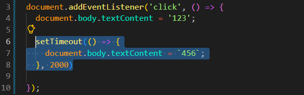
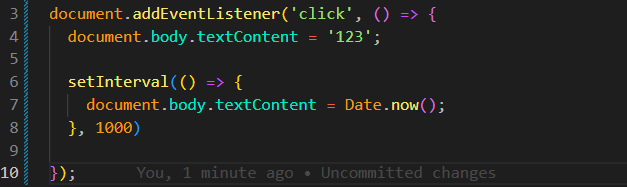
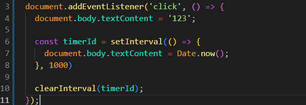
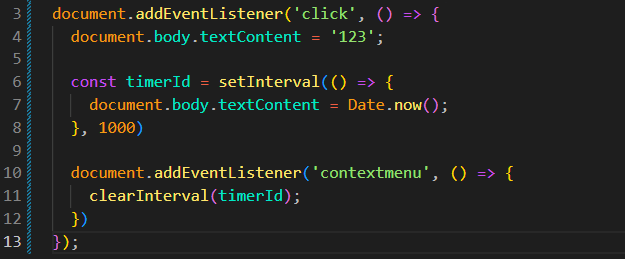

Timers and Event Handlers
Intro
Aqui iremos ver dois usos típicos de callback em JS.
Aqui iremos ver dois usos típicos de callback em JS.
JS:

Interação com a página, exemplo:
Se pegarmos nosso objeto document e depois adicionarmos um manipulador de evento (addEventListener) para o evento de click:
document.addEventListener('click', () => {
document.body.textContent = '123';
});
Resumindo, passamos uma função como segundo parâmetro do addEventListener. Essa função será executada quando o evento de click acontecer. Nesse caso, ela é uma callback.
Outro uso muito comum de callback é na execução retardada de código. Isso pode ser feito usando a função setTimeout.
setTimeout: dentro dessa função, o primeiro parâmetro é a função de callback e o segundo é o atraso em milissegundos: setTimeout(() => {}, 2000)

setInterval(): possui uma estrutura parecida com o setTimeout, porém o resultado é diferente. O setInterval executa a callback repetidamente em um determinado intervalo de tempo.
document.addEventListener('click', () => {
document.body.textContent = '123';
setInterval(() => {
document.body.textContent = Date.now();
}, 1000);
});

Se desejarmos cancelar essa chamada, que está sendo feita a cada segundo, temos uma função chamada clearInterval. Para podermos cancelar o intervalo, é necessário armazenar seu identificador.
Podemos salvar o setInterval em uma variável, ficando da seguinte forma:
const timerId = setInterval(() => { document.body.textContent = Date.now(); }, 1000); clearInterval(timerId);

Podemos observar que agora, para nosso clearInterval, passamos a variável que está armazenando o identificador do setInterval.
Porém, se deixarmos dessa forma, nosso intervalo será interrompido imediatamente. Podemos fazer uma alteração para que essa ação ocorra quando clicarmos com o botão direito do mouse:
document.addEventListener('click', () => {
document.body.textContent = '123';
const timerId = setInterval(() => {
document.body.textContent = Date.now();
}, 1000);
document.addEventListener('contextmenu', () => {
clearInterval(timerId);
});
});
